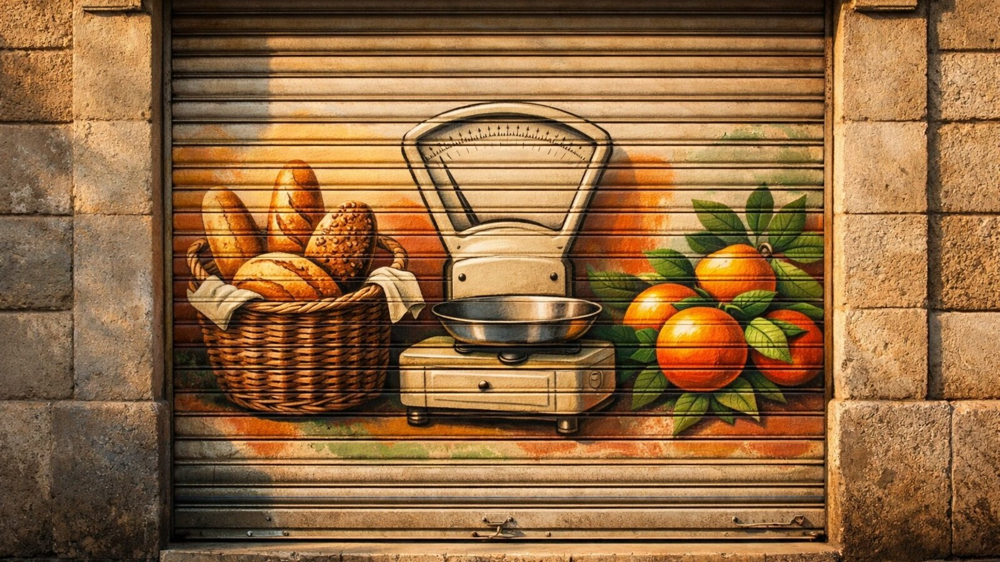

Anàlisi
Febrer 2026
Què és el dumping i com afecta el comerç local?
Darrere de molts tancaments hi ha una estratègia concreta i poc visible.
Llegir l'article →

Adquirim locals comercials en risc per treure'ls del mercat especulatiu i garantir-ne la continuïtat per a la comunitat.
Els comerços locals no tanquen perquè el barri no els vulgui. Tanquen perquè el mercat immobiliari els expulsa: lloguers doblats, propietaris que especulen, falta de relleu generacional.
Abans Que Tanqui és una cooperativa que compra el local quan la pressió immobiliària amenaça un comerç viable. Treure el local del mercat especulatiu és la única manera d'evitar el tancament de manera permanent.
Llegir més sobre el projecte →Cada punt representa un comerç documentat a Gràcia. El mapa s'actualitza a mesura que treballem sobre el terreny.